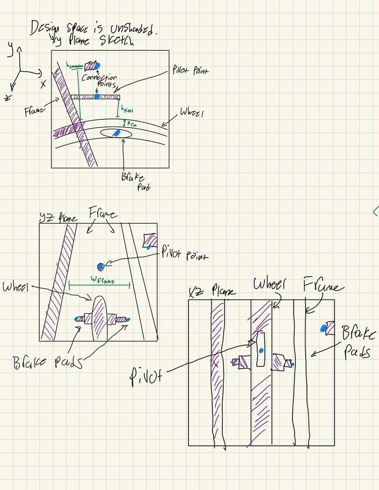
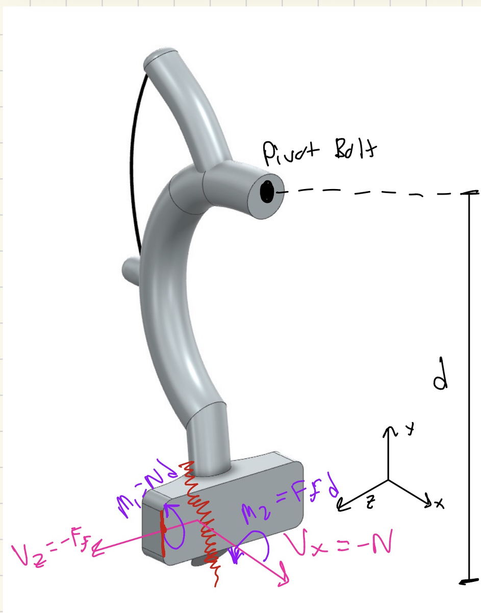
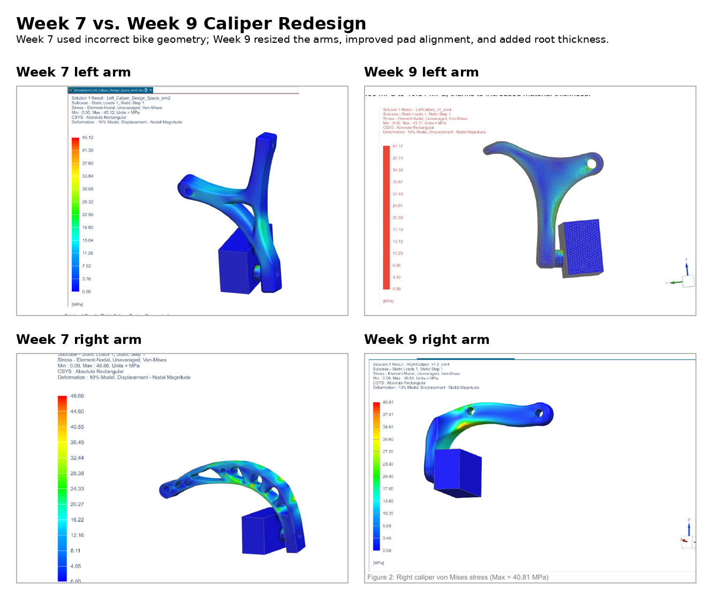
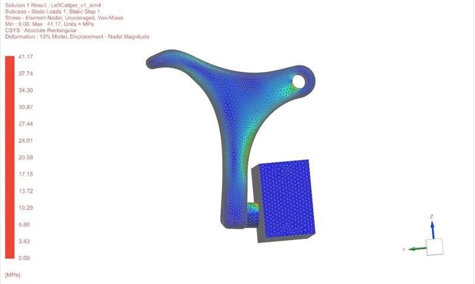
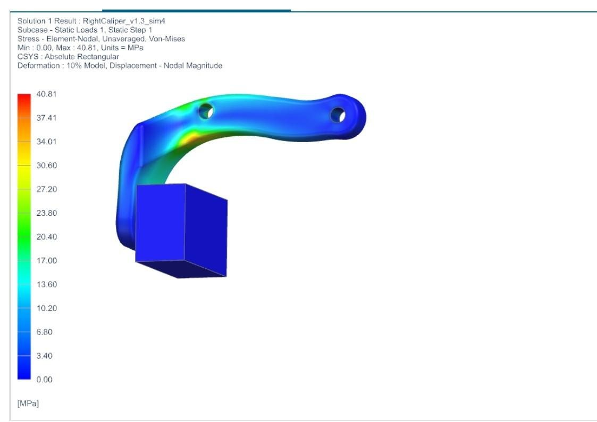

Bicycle Brake Caliper
Mechanical Design & Manufacturing (ME 240) — Northwestern · Spring 2026
{kind=link}
{kind=link}
The redesigned Nylon 12 arms on the test bike, and the cable-side arm.
Overview
For ME 240 our four-person team designed a single-pivot, side-pull brake caliper for the rear wheel of a real test bicycle, printed in SLS Nylon 12. I was testing & validation lead and FEA & topology lead, and redesigned both arms for the final version. Over the quarter I:
- Ran the hand analysis — energy balance, moment balance, and section sizing at the arm root
- Ran a topology optimization on the design-space solid to generate the initial arms
- Meshed and solved both arms in NX Nastran
- Redesigned both arms after the first road test failed
- Ran the road-test program against the ISO braking-distance requirement
Goals & Requirements
- Fit the constrained design space around an actual frame and rim
- Transmit cable tension into pad clamping force, then release cleanly
- Stop the bike within the braking distances of ISO 4210-2 / 4210-4 — 7.62 m adjusted to our test speed
- Keep peak stress under Nylon 12’s ~50 MPa ultimate strength
- Keep total deflection under 11 mm so the lever can’t bottom out on the bar
Design
Hand analysis came first. An energy balance (d = v²/2μg) set the rim friction the pads have to generate, a moment balance about the pivot set the lever ratio, and σ = P/A + Mc/I sized the sections at the arm root — and correctly predicted where FEA would later find the peak stress, which is why I trusted the mesh.
{kind=link}

Design space in three planes
{kind=link}

Internal moments at the arm root
The initial arms came out of a topology optimization I ran on the design-space solid. Each arm was meshed and solved separately in NX Nastran — constrained at the pivot and mounting interfaces, loaded with the 180 N cable force (the ISO 4210 cap on lever input) plus the 61.6 N pad-friction reaction distributed over the pad face, stress read as unaveraged von Mises with constraint singularities excluded. That design passed on paper: 45.12 MPa peak on the left arm, 48.66 MPa on the right, 8.953 mm total deflection.
It failed the first road test anyway. The print was built around incorrect bike design-space dimensions, so the pads rubbed at rest and never contacted the rim squarely. I redesigned both arms around the verified geometry: pads meeting the rim flat and symmetrically, thickened root sections, a reoriented cable hole, and hardware clearance. The redesign also improved the numbers: peak stress fell about 16%, to 41.17 MPa on the left and 40.81 MPa on the right, and total deflection dropped from 8.953 mm to 7.581 mm against the 11 mm limit.
{kind=link}

Initial vs. redesigned arms, same load case
{kind=link}

Redesigned left arm von Mises — max 41.17 MPa
{kind=link}

Redesigned right arm von Mises — max 40.81 MPa
As testing lead I ran the validation — a rider braking as hard as possible from a stop line — with the stop distance corrected to the ISO 4210-2 reference speed by dmax = dISO(vtest²/vISO²). The redesigned caliper stopped the bike in 5.334 m against the 7.62 m allowable, at 40 g per arm and 140 N actuation force. A Granta EduPack screen selected 7075-T6 aluminum for production, and a fatigue check (Basquin S-N with Marin factors) showed the Nylon 12 part is a finite-life prototype.
{kind=link}
Both printed arms installed, and the braking run that produced the 5.334 m stop.
Outcomes
- Road-test pass: 5.334 m stop against the 7.62 m ISO-adjusted limit
- Peak stress after the redesign: 48.66 → 40.81 MPa (right arm, ~16% lower) and 45.12 → 41.17 MPa (left); deflection safety factor 1.23 → 1.45
- 7075-T6 aluminum selected as the production material
- Three requirements still fail: overall width 60.6 mm vs 55, released pad clearance 0.05 mm vs 0.3–2.0, adjustment range 1 mm vs 2
Scope note: the printed caliper is a finite-life prototype. The FEA numbers are static checks against the ~50 MPa ultimate, no fatigue calculations involved.